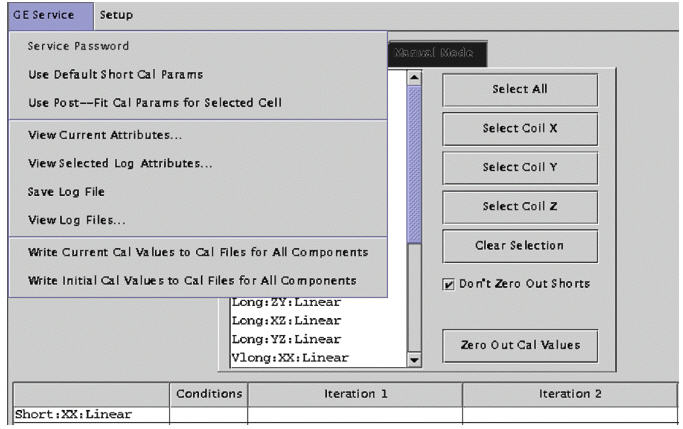
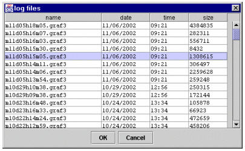
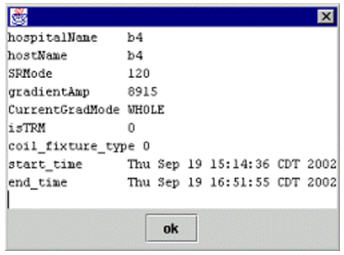

Operating Documentation
Direction 5440001-3, Rev# 6
Signa HDxt Service Methods
Module Version 1.0, Version Date 5/3/07
Operating Documentation |
If the service key is not present, many of the options will be unavailable. If the key is not available and your have GEMS service, you can activate all options by selecting [Service Password] and entering the service password. See Illustration 1.
Illustration 1: Viewing a Log File

If you want to view a previous log file, click on [GE Service] and choose View Log Files. See Illustration 1. After the list of log files is displayed, click on the log file you want to be displayed and click the [OK] button. See Illustration 2. The result area/table will be filled up with eddy current measurement numbers.
Illustration 2: Choosing a Log File

If a log file is loaded, you may want to write the “current” cal values to cal files for all components. “Current” cal values for a component means last “accepted” cal values for the component. “Accept” cal values means those fitted parameters which are accepted by the cal files (grafidy(x/y/z).cal) and downloaded to the hardware/pre-emphasis for the future scans. “Current” cal values are normally generated from the next to last iteration and was used by the last iteration during scan. However, after the generation of the “current” cal values several scan/iterations may follow; for example, linear component of long xx was met target before b0 component, so while b0 is experiencing more iterations (cal values changes), the linear component does not change its cal values, so the last “accepted” cal values are generated not from first to last iteration for linear but a few iterations ago.
This menu is useful when you know that, say, a few days ago you did a good eddy current calibration, and today while redoing it for some reason, eddy current compensation became unusable and, worse, you forgot to save the grafidy(x/y/z).cal files before you started doing this. Fortunately, you can load the log file he generated a few days ago, and push this menu to load the “good” cal values back to the cal files (and the hardware).
You may want to write the initial cal values to cal files for all components, either after some iterations for some components and decide you would rather discard your new results (back to the intial cal values instead), or you may load a log file to write the initial values (of the log file that were in the cal files at that time when this log file was generated when Grafidy 3 was invoked).
The log file is usually saved when you exit. However, you may choose to save it more often. You may save the calibration result/log (more than just grafidy(x/y/z).cal files, which are always saved) you've gotten so far by selecting Save Log File. This is useful in case of a system crash so at least a partial result/log is saved.
This menu selection will show the scanner/system information of the system you're using, such as hospital name, slew rate, gradient driver, gradient mode (whole/zoom), and start time (when Grafidy 3 was invoked).
This menu selection will show the scanner/system information of the system on which this log file was generated. It could be a different system than the system you're on, or it can have a different gradient mode (whole/zoom). It certainly has a different start time and end time. See Illustration 3.
Illustration 3: View Selected Log Attributes
